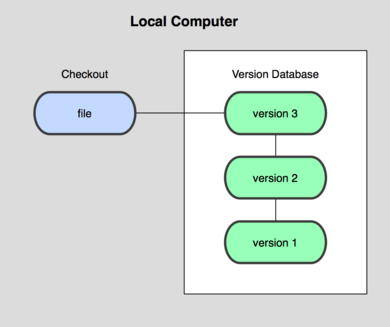

1. ¿Qué es GIT?
Version Control System
Un control de versiones es un sistema que registra los cambios realizados en un archivo o conjunto de archivos a lo largo del tiempo, de modo que puedas recuperar versiones específicas más adelante. Te permite revertir archivos a un estado anterior, revertir el proyecto entero a un estado anterior, comparar cambios a lo largo del tiempo, ver quién modificó por última vez algo que puede estar causando un problema, quién introdujo un error y cuándo, etc. Usar un VCS también significa que si rompes o pierdes archivos puedes recuperarlos.
Versionado local
Consiste en copiar los archivos a otro directorio (quizás indicando la fecha y hora en que lo hicieron). Este método es muy común porque es muy sencillo, pero también es tremendamente propenso a errores. Es fácil olvidar en qué directorio te encuentras y guardar accidentalmente en el archivo equivocado o sobrescribir archivos que no querías. Funciona bien para trabajar solos, pero si queremos incorporar otra gente al equipo van a empezar a surgir problemas.